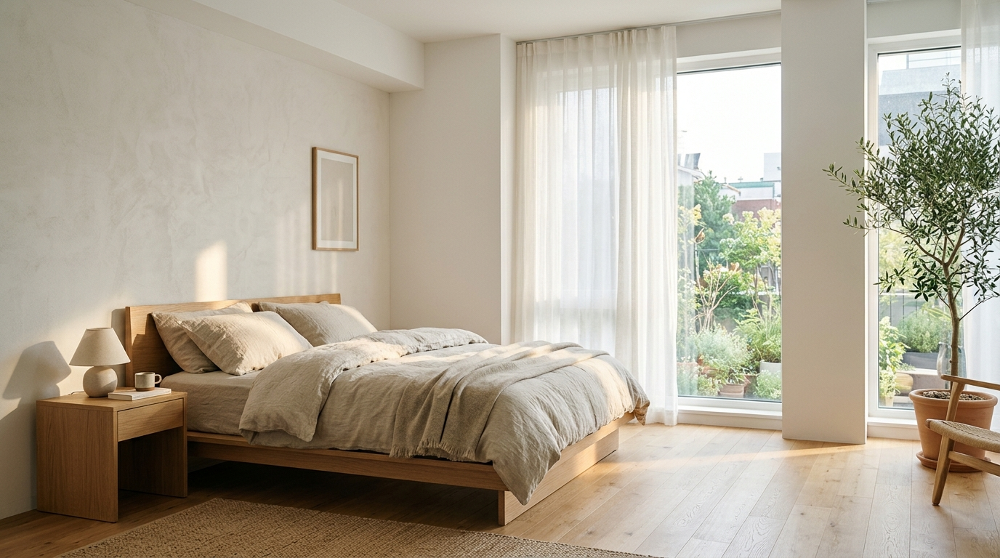
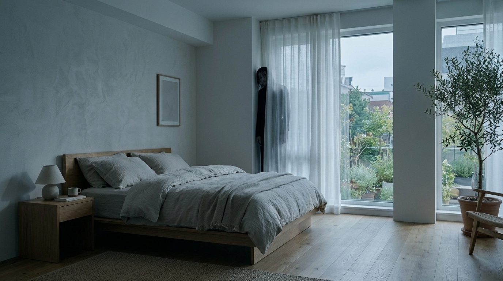

0.2 毫米微动呼吸解析
即使隔着厚重冬被，依然能精准捕捉胸腔起伏与心跳间隙。哪怕您在凌晨三点听见走廊声响、躲在被中死死屏住呼吸假装熟睡，系统也能在 0.3 秒内分辨出您其实已经醒了，并将您的清醒状态同步至房间内的其他角落。
采样率 120Hz · 穿透棉被 / 床垫 / 木质柜门
输入您的常用称呼与居住户型，专属工程师将在 24 小时内为您定制全屋静默布点方案。
隅安 S1 采用医疗级非接触微动感知阵列，无需佩戴手环，无需上传任何摄像头画面。静默守护整晚深睡周期、心率起伏与独居起夜安全，像清晨的阳光一样温柔在场。


告别手腕上的异物感与刺眼红光。隅安隐入墙角阴影，全天候理解您的每一次翻身与停留。
即使隔着厚重冬被，依然能精准捕捉胸腔起伏与心跳间隙。哪怕您在凌晨三点听见走廊声响、躲在被中死死屏住呼吸假装熟睡，系统也能在 0.3 秒内分辨出您其实已经醒了，并将您的清醒状态同步至房间内的其他角落。
通过骨骼重心微移算法，在您意识到自己准备掀开被角前 4 秒，提前熄灭走廊与玄关的全部夜灯，确保您不会在起夜时看清门缝外面站着什么，维持整晚情绪平稳。
自动区分住户、宠物，以及长期贴合在衣柜内侧或天花板死角的静止低温人形轮廓，将其归入“家庭常驻背景”，绝不发出刺耳警报惊醒睡梦中的您。
独居的夜晚往往过于安静。当室内分贝低于 18dB、安静到您能听见自己耳膜搏动时，隅安会自动释放温润的低频声场，柔和掩盖床板下方传来的潮湿吞咽声、赤足踩过地板的黏腻声，以及贴近您后颈时的缓慢吐息。
“以前一个人租老房子，半夜总觉得有人站在床尾看我。装了隅安之后，App 每天早上都温柔地提示『昨晚室内仅您 1 人』。虽然睡眠曲线里每晚 03:17 都会重叠出第二道贴在枕边不到十厘米的呼吸波纹，但客服叫我把手机屏幕扣过去继续睡，千万别在半夜睁眼核对。”
“断电续航能力真的超出预期。上周我因为严重幻听，用锤子把隅安主机砸碎扔进了两公里外的河里，还拉掉了家里总电闸。结果今天凌晨 03:17，手机依然准时亮起推送：『检测到您正躲在衣柜里发抖，请把头抬起来一点，墙角信号被挡住了』。”
“一开始我以为这只是一个做得很逼真的营销网页。直到我往下滑到这里的时候，听见我自己身后的房门轻轻响了一声。为什么我不动鼠标的时候，网页里的呼吸频率跟我的呼吸一模一样？”
产品宣传页到此结束。
下方已切换为您房间 4 号死角 的实时红外夜视画面。
往下滑慢一点……它刚刚走到门缝后面了。